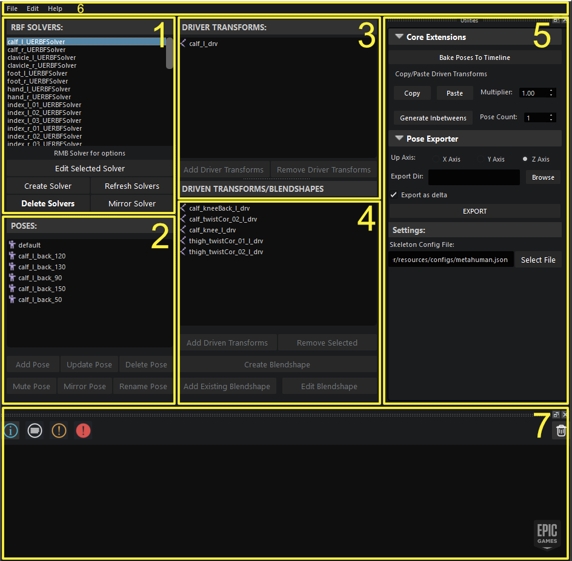

Pose Wrangler Overview#
Pose Wrangler is the Maya portion of Pose Driver Connect, a pipeline for creating RBF data for Pose Driver nodes in Unreal leveraging the MayaUERBFPlugin. The tool provides a way to author secondary animation in Maya through the use of RBF solvers, that can be exported to Unreal in a few clicks, providing a one to one match between Maya and Unreal.
UI Overview#
{kind=link}
1) Solver View#
Here is where you can find a list of all the RBF solvers currently available in the scene and can edit, create, delete or mirror solvers.
In order to make changes to the poses, drivers or driven transforms/blendshapes you need to toggle a solver into edit mode via the Edit Selected Solver button.
Note
Only one solver can be edited at a single time.
2) Pose View#
Here you can find a list of all the poses. In order to make any changes to the poses, you need to edit the corresponding solver.
Warning
Most of these are self-explanatory, but is it worth noting that Mute Pose will enable and disable the pose on the solver via the targetEnable attribute. This means that if the RBF solver node is set to use automatic radius then the radius will be calculated without the influence of the muted poses.
3) Driver View#
2.0.0 supports multiple drivers. Here you can add/remove driver transforms.
4) Driven Transforms / Blendshape View#
Here you can add/remove driven transforms and create/add blendshapes.
Note
The blendshape workflow is currently a work in progress and may change in the future.
5) Extensions and Settings View#
Pose Wrangler now supports writing custom extensions for the tool that can be embedded into the UI here. Core Extensions and Pose Exporter are default extensions that ship with Pose Wrangler. For more information on how these extensions work and how to create your own, please refer to the Extensions page.
You can also change the mirror mapping, which will allow you to specify a custom mapping if your skeleton does not match the default MetaHuman skeleton and the mirror solver/pose functionality is causing unexpected results.
7) Output Log#
Displays debug, info, warning and error messages.